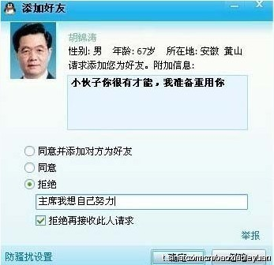
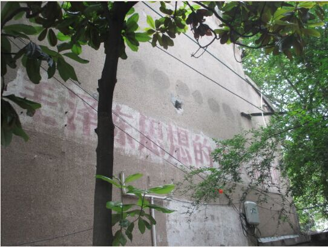

Conversation with 81184027 at Tue 08 Jul 2014 12:15:36 PM CST on 154115835 (webqq)
(12:17:26 PM) 福建-福州&水浒: 嗯:blush:
(12:17:26 PM) 福建-福州&水浒: 嗯:blush:
(12:20:22 PM) 福建-福州&水浒: 文革就是一个很好的例子嘛:blush:
(12:20:22 PM) lost message from #169217 to #169218
(12:22:12 PM) 福建-福州&水浒: 文革时期，身在台湾的胡适先生也被无情的“被批斗”
(12:21:25 PM) 光: 将知识分子踩在脚下
(12:21:51 PM) 光: 老九还是臭的
(12:22:06 PM) 光: 真是荒唐的岁月
(12:24:11 PM) 福建-福州&水浒: :|
(12:22:30 PM) 光: 这样子的思想，哪有人家还会送小孩子去读书
(12:22:43 PM) 光: 读出来就是一个臭的老九
(12:24:45 PM) 福建-福州&水浒: :D
(12:22:55 PM) 光: 这就是文革的一代人
(12:23:05 PM) 光: 嗯
(12:23:50 PM) 光: 我家就很有代表性
(12:24:02 PM) 光: 文革前的小孩都上了大学
(12:24:11 PM) 光: 文革后的小孩都是工人
(12:24:28 PM) 光: 现在肯定是前者过得日子舒服
(12:25:06 PM) 光: 当然这里的小孩，是指的当时的小孩
(12:25:10 PM) 光: 也就是我的长辈
(12:25:36 PM) 光: 我相信大多数人家应该也差不多
(12:26:03 PM) 光: 而闪电入教的人群中往往以后者偏多
(12:26:17 PM) 光: 也就是文革后的这些小孩
(12:28:53 PM) 福建-福州&水浒: 唉
(12:29:54 PM) 上善若水: 缺失的东西很多
(12:28:15 PM) 光: 后者后来面临的社会现实
(12:30:08 PM) 上善若水: 后文革时代
(12:28:21 PM) 光: 就是下岗国企改制
(12:28:37 PM) 光: 这代人最可怜
(12:30:58 PM) 上善若水: 上一代经历太多的落差
(12:29:31 PM) 光: 年轻的时候提倡奉献
(12:29:38 PM) 光: 年老的时候一无所有
(12:29:52 PM) 光: 社会向资本主义转型
(12:30:13 PM) 光: 冰火两重天
(12:30:32 PM) 光: 上山下乡大跃进
(12:30:40 PM) 光: 到现在改革开放
(12:30:45 PM) 光: 等等
(12:30:51 PM) 光: 这些人都经历了
(12:32:51 PM) 福建-福州&水浒: :pray:
(12:32:53 PM) 上善若水: 恩
(12:33:45 PM) 上善若水: 现在年轻人又得为生存四处奔命呀
(12:32:01 PM) 光: 延续
(12:33:55 PM) 上善若水: 可以说我们之里很多人，
(12:34:04 PM) 福建-福州&水浒: 现在年轻人没事件读书
(12:34:08 PM) 上善若水: 我说我四川这边
(12:34:22 PM) 福建-福州&水浒: 没时间
(12:34:25 PM) 上善若水: 很多孩子根本就不知道父母在信什么教
(12:36:59 PM) 福建-福州&水浒: 嗯
(12:43:04 PM) 上善若水: 午安，
(12:43:10 PM) 上善若水: 睡觉
(12:47:35 PM) 田慧慧-金华: 现在医院也太贵了，一年多前我早产剖腹住院7天也只花了7000多，现在我妹妹就割阑尾居然4天已经花了7700元。她没工作没医保完全自费的。年轻人还是要出去工作啊，妹夫一年累死累活可能也就20万，她一买衣服一生病难存钱。
(12:47:51 PM) 田慧慧-金华: 等宝宝大点我也得出去工作。自己缴纳社保不划算。
(12:48:13 PM) 福建-福州&水浒: 唉
(12:49:31 PM) 上善若水: 年入二十W感叹生活难:-(
(12:49:44 PM) 福建-福州&水浒: 呵呵嘿
(12:50:05 PM) 福建-福州&水浒: 年入20W中等收入啦
(12:50:15 PM) 苹果: 恩宠，那进的是私人医吧收费高
(12:50:22 PM) 上善若水: 好吧，自尊心受到严重打击，这下睡不着了
(12:50:35 PM) 苹果: 院
(12:51:48 PM) 田慧慧-金华: 不是，我剖腹和妹妹阑尾都是武汉市第五医院，三甲。要么医生逮着个自费的就是要开贵点的针来吊瓶。
(12:52:41 PM) 田慧慧-金华: 我回武汉生产是自费，医保是金华的。回去报销了。妹夫老出国出差很辛苦，熬夜，所以才业绩好收入还行。养家不容易。谁要他娶个没工作的美女呢
(12:50:50 PM) lost message from #169276 to #169276
(12:52:41 PM) 苹果: 嗯
(12:52:41 PM) 福建-福州&水浒: (#169276)这医生什么思维啊
(12:52:53 PM) 田慧慧-金华: 去医院照顾妹妹了。
(12:52:54 PM) 福建-福州&水浒: 自费就开好药？
(12:53:23 PM) 上善若水: 可报销的药便宜一些
(12:53:29 PM) 上善若水: 这个可能真有
(12:53:54 PM) 苹果: 市场经济
(12:54:10 PM) 上善若水: 医院也是商业体
(12:54:27 PM) 福建-福州&水浒: 公立医生在病人入院时一般会问家属有木有医保
(12:53:16 PM) 光: 群里就有职业是医生的
(12:53:24 PM) 光: 医生也有医生的苦水
(12:55:23 PM) 上善若水: 对
(12:53:35 PM) 光: 嗯
(12:55:39 PM) 福建-福州&水浒: 如没有，也会便宜收费，当然医生也会察眼观色
(12:56:03 PM) 上善若水: 患者将所有的积怨归结给医生也不完全可取
(12:54:29 PM) 光: 之前有一个群友和我说过这样的事情
(12:56:22 PM) 福建-福州&水浒: 所以说你妹妹遇到了会察言观色的医生
(12:56:31 PM) 上善若水: 商家斩客也是一样
(12:56:44 PM) 福建-福州&水浒: 算你妹妹没遇对人啊
(12:55:08 PM) 光: 说他们医院上级下了文件不能滥开药加重患者的负担
(12:55:18 PM) 光: 然后他们医院领导就开了一个会
(12:55:23 PM) 光: 传达这个精神
(12:57:32 PM) 上善若水: 一个阑尾手术花这么多钱，是有点多
(12:55:43 PM) 光: 之后补充让各个医生要抓紧创收
(12:55:59 PM) 光: 大概意思是这样的
(12:56:07 PM) 光: 具体内容记不清了
(12:58:15 PM) 福建-福州&水浒: :wipe:
(12:56:57 PM) 光: 我想最后医生还是会按照补充的来
(12:59:16 PM) 苹果: 医院也是商业体
(12:58:55 PM) 光: 嗯
(12:59:07 PM) 光: 以盈利和创收为目的
(01:04:26 PM) 光: (12:56:22 PM) 福建-福州&水浒: 所以说你妹妹遇到了会察言观色的医生
(12:56:31 PM) 上善若水: 商家斩客也是一样
(12:56:44 PM) 福建-福州&水浒: 算你妹妹没遇对人啊
(01:04:37 PM) 光: 对的人在这样的环境下呆不长
(01:11:01 PM) 福建-福州&水浒: 真是悲哀
(01:11:18 PM) 福建-福州&水浒: 医生是多么神圣的职业
(01:11:56 PM) 光: 对
(01:12:15 PM) 光: 如果违反或者触犯直接领导
(01:12:21 PM) 光: 下场是怎样
(01:12:25 PM) 光: 医生也是要吃饭的
(01:12:34 PM) 光: 如果大环境是这样
(01:14:36 PM) 福建-福州&水浒: 呃呃呃呃～直接拜拜了
(01:12:49 PM) 光: 他会怎么选择
(01:12:52 PM) 光: 嗯
(01:13:58 PM) 光: 就和扶摔
(01:16:01 PM) 福建-福州&水浒: 附庸了
(01:14:12 PM) 光: 还有遇到特殊事件见义勇为
(01:14:22 PM) 光: 这其实都可以归为一类
(01:14:34 PM) 光: 理性的人不能不考虑后果
(01:16:39 PM) 福建-福州&水浒: 嗯
(01:14:51 PM) 光: 嗯
(01:19:55 PM) 苹果: 都随大流了
(01:26:54 PM) 阿萨汗蛋包飯: 
(01:29:04 PM) 独行者: :D
(01:28:23 PM) 光: 还是那句话，坏的制度让好人变坏
(01:28:30 PM) 光: 好的制度让坏人变好
(01:31:11 PM) 永远的心: :D
(01:31:34 PM) 苹果: :)
(02:44:33 PM) 4月青年: |-)
(02:45:19 PM) 福建-福州&水浒: 青年很困？
(02:51:09 PM) 苹果: 睡不着嘛
(03:28:18 PM) 阿萨汗蛋包飯: 台风天，要下雨了:sweat_drops::umbrella:
(03:29:40 PM) 阿萨汗蛋包飯: 夏天就喜欢台风，有台风真好:umbrella:
(03:29:55 PM) 阿萨汗蛋包飯: 天然降温:D
(03:31:06 PM) 苹果: :D:D
(03:31:39 PM) 苹果: 还可以洗澡
(03:31:58 PM) 苹果: :D
(03:33:27 PM) 上善若水: 空调都不管用了
(03:33:57 PM) 阿萨汗蛋包飯: 空调跟大自然比，算个球
(03:38:33 PM) 4月青年: 在工厂上班
(03:38:42 PM) 4月青年: 好无聊啊
(03:38:51 PM) 阿萨汗蛋包飯: :D:umbrella:
(03:38:54 PM) 向北方: 辞职
(03:38:59 PM) 4月青年: 热
(03:38:59 PM) 向北方: 回家吧
(03:39:03 PM) 向北方: 回大自然
(03:39:04 PM) 4月青年: 没钱
(03:39:09 PM) 福建-福州&水浒: 35度
(03:39:11 PM) 4月青年: :撇嘴:
(03:39:18 PM) 向北方: 田园将荒芜
(03:39:18 PM) 福建-福州&水浒: 妈呀太热了
(03:39:22 PM) 向北方: 胡不归
(03:39:30 PM) 向北方: 这21度
(03:39:30 PM) 4月青年: 惠州这边34度
(03:39:33 PM) 福建-福州&水浒: 福建近来有台风来袭？
(03:39:40 PM) 阿萨汗蛋包飯: 嗯已经来了！
(03:39:41 PM) 向北方: 这里21度
(03:39:42 PM) 4月青年: 哇
(03:39:45 PM) 阿萨汗蛋包飯: 浣熊
(03:39:48 PM) 阿萨汗蛋包飯: 台风还有名字呢
(03:40:01 PM) 福建-福州&水浒: 擦，台风真好
(03:40:03 PM) 向北方: 像秋天一样
(03:40:03 PM) 阿萨汗蛋包飯: 叫“浣熊”台风
(03:40:22 PM) 4月青年: :撇嘴:继续上班
(03:40:36 PM) 福建-福州&水浒: 福建要凉快一阵子了
(03:41:17 PM) 阿萨汗蛋包飯: 8号台风“浣熊”即将袭击岛国
(03:41:27 PM) 阿萨汗蛋包飯: 现在已经在福建登陆
(03:41:50 PM) 福建-福州&水浒: :wipe:
(03:42:21 PM) 上善若水: 这个要怎么理解
(03:42:57 PM) 福建-福州&水浒: 去了福建好受台风天气也是不错的:)
(03:43:03 PM) 福建-福州&水浒: 感受一下
(03:41:29 PM) lost message from #169376 to #169376
(03:43:20 PM) 上善若水: 朴—读“瓢”不读普
仇—读“求”不读愁
单—读“善”不读担
解—读“谢”不读姐
区—读“欧”不读屈
曾—读“增”不读层
员—读“运”不读元
种—读“虫”不读肿
任—读“仁”不读认
燕—读“烟”不读宴
查—读“渣”不读茶
华—读“化”不读滑
曲—读“取”不读趋
干—读“甘”不读赣
相—读“向”不读乡
占—读“沾”不读站
牟—读“谋”不读木
阮—读“软”不读远
龚—读“弓”不读巩
祭—读“债”不读继
洗—读“险”不读喜
缪—读“妙”不读谬
臧—读“赃”不读葬
晁—读“潮”不读兆
尉—读“预”不读胃
俱—读“居”不读具
召—读“邵”不读赵
宁—读“凝”不读泞
葛—读“舸”不读隔
乐—有的读“勒”有的读“月”
覃—有的读“秦”有的读“潭”
纪—有的读“挤”有的读“记”
令狐（复姓）—读“灵”不读另
万俟（复姓）—读“莫齐”不读腕矣
(03:43:49 PM) 阿萨汗蛋包飯: 我晒的衣服打湿了
(03:43:54 PM) 阿萨汗蛋包飯: 晚上要烘干下
(03:44:15 PM) 阿萨汗蛋包飯: 风雨交夹:umbrella:
(03:44:47 PM) 福建-福州&水浒: --b
(03:45:18 PM) 上善若水: 洗—读“险”不读喜，好像是冼吧
(03:45:24 PM) 上善若水: 这个字错啦？
(03:46:16 PM) 福建-福州&水浒: 不懂
(03:46:38 PM) 上善若水: 作曲字有冼星海
(03:46:52 PM) 上善若水: 小时候读错过，专门查过字典！
(03:47:14 PM) 福建-福州&水浒: 读xin吧
(03:48:03 PM) 上善若水: XIAN
(03:48:15 PM) 福建-福州&水浒: 嗯
(03:48:32 PM) 阿萨汗蛋包飯: “浣熊”将以每小时23公里左右的速度向西北偏北方向移动，强度继续加强，最强可达16-17级（55-60米/秒），并逐渐向琉球群岛南部海域靠近。8日白天“浣熊”将移入东海东南部，并将在东海东部北上，强度逐渐减弱。9日以后，“浣熊”将转向东北方向移动。
(03:49:21 PM) 福建-福州&水浒: :|
(03:50:42 PM) 独行者: :D
(03:52:06 PM) 福建-福州&水浒: 凉快撒
(03:52:50 PM) 福建-福州&水浒: 就是一些工厂和低洼农田会遭殃
(03:52:54 PM) 福建-福州&水浒: 唉:pensive:
(03:53:08 PM) 福建-福州&水浒: 也不好的，两面性
(03:53:10 PM) 阿萨汗蛋包飯: 城市低处会形成局部内涝
(03:53:24 PM) 阿萨汗蛋包飯: 短时间强降水
(03:55:17 PM) 阿萨汗蛋包飯: 一边出太阳一边下雨。道是无晴却有晴
(03:55:34 PM) 向北方: 哦
(03:57:20 PM) 渝秋蝉-罗亚铃: 香港警察队员协会昨发表声明，指责于7.1抗议当晚留守的行动者为「寻衅滋事」。国际特赦组织发表声明指，香港并没有「寻衅滋事」罪，而且和平集会自由是受到法律保障。寻衅滋事是大陆匪帮对於人权打压的专制武器，香港人看清楚：你不誓死对抗专制匪党，专制匪帮就会用『中国特色』侵害香港人权！
[图片]
(03:57:25 PM) 渝秋蝉-罗亚铃:
(03:58:34 PM) 上善若水: :强:
(03:59:19 PM) 向北方: 瞎说什么东西
(03:57:34 PM) 光: 民主派有没有能在国内建立服务器的
(03:57:42 PM) 光: 我印象中没有
(04:00:06 PM) 向北方: 继续效忠女皇奶奶去吧
(03:59:04 PM) 光: 比如说能代表民主派言论的网站能不能在国内租用服务器？
(04:01:46 PM) 向北方: 反对中共？
(04:00:01 PM) 光: 如果不行，以后网站就要回避这个问题，不然以后没法立足大陆
(04:02:17 PM) 向北方: 螳臂当车的故事懂吗
(04:00:26 PM) 光: 我在想定位问题
(04:00:45 PM) 光: 如果你连立足都没办法
(04:00:48 PM) 光: 怎么谈发展
(04:03:01 PM) 上善若水: 还真有五十四个国家在继续效忠女皇奶奶
(04:01:47 PM) 光: 我印象真的没有
(04:03:41 PM) 上善若水: 炎黄春秋还能上吗？
(04:02:05 PM) 光: 民主派的可以以个人博客的方式存在
(04:04:02 PM) 4月青年: :wipe:
(04:02:22 PM) 光: 但是像样的网站基本上都被墙了
(04:02:37 PM) 光: 博客的话也会被删贴
(04:02:47 PM) 光: 如果用在第三方服务比如sina
(04:04:41 PM) 上善若水: 被关
(04:02:50 PM) 光: 网易
(04:02:52 PM) 光: 嗯
(04:03:04 PM) 光: 直接关
(04:03:13 PM) 光: 所以这个怎么发展
(04:03:22 PM) 光: 连立足都困难
(04:05:20 PM) 上善若水: 我觉得网易还是比较有点骨气
(04:03:37 PM) 光: 网易好一些
(04:05:36 PM) 上善若水: 新闻下的评论删的少
(04:03:48 PM) 光: 嗯
(04:03:55 PM) 光: 网易新闻一直都不错
(04:05:55 PM) 上善若水: 也和央视对顶过
(04:04:05 PM) 光: 有骨气的媒体看得出来
(04:04:23 PM) 光: 叶公好龙的虽然有
(04:04:28 PM) 光: 这个时候就不肯出来了
(04:06:22 PM) 向北方: 你们为何不逃离呢
(04:06:34 PM) 向北方: 去别处生活
(04:04:48 PM) 光: 所以要做事
(04:06:39 PM) 上善若水: 怎么逃？
(04:04:53 PM) 光: 先要立足
(04:04:57 PM) 光: 在求发展
(04:06:48 PM) 上善若水: 为什么要逃？
(04:05:11 PM) 光: 民主派怎么在大陆生根
(04:05:15 PM) 光: 这是一个问题
(04:07:07 PM) 向北方: 不是喜欢墙外吗
(04:07:24 PM) 向北方: 都民主了，就七零八落了
(04:07:40 PM) 向北方: 这是又在呼喊吧
(04:05:55 PM) 光: 你理解的民主是什么
(04:06:04 PM) 光: @向北方
(04:06:12 PM) 光: 说来听听
(04:06:18 PM) 光: 还有你反对的理由
(04:08:13 PM) 向北方: 你理解的民主，是当局所不容的吗
(04:06:28 PM) 光: 你说来听听么
(04:06:32 PM) 光: 不要不好意思
(04:07:13 PM) 光: 连共产党都要讲党内民主
(04:07:29 PM) 光: 你又是哪一派
(04:10:09 PM) 向北方: 民主，首先要理性，公正，开明
(04:08:25 PM) 光: 是啊
(04:08:31 PM) 光: 那你反对什么啊
(04:09:28 PM) 光: (04:06:22 PM) 向北方: 你们为何不逃离呢
(04:06:34 PM) 向北方: 去别处生活
(04:11:29 PM) 向北方: 一群或愚昧或极端的人，是没有民主的
(04:09:42 PM) 光: 你说你这些话不是瞎起哄么
(04:11:38 PM) 向北方: 就需要权利
(04:10:08 PM) 光: 那么怎么界定那些是愚昧的人
(04:10:10 PM) 光: 哪些不是
(04:12:01 PM) 向北方: (#169467)真理，并不掌握在所有人手中
(04:10:24 PM) 光: 那么你怎么确定真理在谁的手里
(04:10:44 PM) 光: 回去想想清楚再来说话
(04:10:51 PM) lost message from #169470 to #169470
(04:12:42 PM) 向北方: 那些愚昧的人，被带领，被教化
(04:11:28 PM) 光: 你认为别人愚昧，别人也认为你愚昧
(04:13:27 PM) 向北方: 毕竟共产党是发现着的
(04:11:41 PM) 光: 这样怎么判断谁是真愚昧
(04:13:35 PM) 向北方: 发展着的
(04:12:07 PM) 光: 那么什么是静止的
(04:12:09 PM) 光: 不发展的
(04:14:19 PM) 向北方: 倒退，便违反规律
(04:12:34 PM) 光: 哦
(04:12:39 PM) 光: 那就是角度了
(04:14:31 PM) 上善若水: 早年共产党对国民党提民主
(04:14:40 PM) 向北方: 怎么
(04:14:40 PM) 上善若水: 真刀枪地干
(04:12:52 PM) 光: 也许你认为的倒退是别人认为的进步
(04:13:02 PM) 光: 你怎么界定什么进步什么倒退
(04:15:09 PM) 向北方: 我希望复辟封建王朝
(04:13:23 PM) 光: 所以啊
(04:15:16 PM) 向北方: 这也是进步么
(04:13:29 PM) 光: 你脑子就是一团浆糊
(04:13:34 PM) 光: 自己都没搞明白
(04:13:38 PM) 光: 乱反对什么
(04:15:41 PM) 向北方: 行，我退出。
(04:14:01 PM) 光: 看书去
(04:16:01 PM) 福建-福州&水浒: 真理掌握在少数人手中，但是少数人也服从多数啊:D:D:D
(04:14:16 PM) 光: 少凑热闹，少起哄
(04:16:36 PM) 上善若水: 几万几十万上百万地人起来为中国争民主
(04:16:49 PM) 上善若水: 他们可没有逃呀
(04:17:04 PM) 上善若水: 一直是正面的榜样
(04:17:19 PM) 上善若水: 这个怎么说呢
(04:17:28 PM) 福建-福州&水浒: 现在所谓的民主是做给别人看的
(04:17:42 PM) 福建-福州&水浒: 吼吼，给老外看的
(04:17:52 PM) 向北方: 一目了然。
(04:17:56 PM) 阿萨汗蛋包飯:  呵呵，民主中国不可能
呵呵，民主中国不可能
(04:18:21 PM) 阿萨汗蛋包飯: 民主本就是外来词，来自democracy
(04:18:38 PM) 上善若水: 也是小日本译的
(04:18:45 PM) 上善若水: :D
(04:19:02 PM) 福建-福州&水浒: :$
(04:19:03 PM) 阿萨汗蛋包飯: 然后中国吸收了日文中的民主和经济两个词
(04:19:20 PM) 阿萨汗蛋包飯: 五四运动之前，中国人不知道民主是什么
(04:19:26 PM) 福建-福州&水浒: 唉，我又想起了便当
(04:19:41 PM) 阿萨汗蛋包飯: 便当也是直接吸收日文的词汇
(04:19:42 PM) 福建-福州&水浒: 厕神崇拜
(04:19:45 PM) 向北方: 量贩呢
(04:20:02 PM) 向北方: 卡拉OK
(04:20:28 PM) 阿萨汗蛋包飯: 嗯，都是直接来自日文
(04:21:04 PM) 上善若水: 看网上，提激进民主和改良民主的都不少
(04:21:28 PM) 上善若水: 且都相互抨击
(04:22:06 PM) 上善若水: 可以讨论么？
(04:23:30 PM) 福建-福州&水浒: 讨论啥东东？
(04:24:27 PM) 阿萨汗蛋包飯: 明治以降，吸收了西洋文明的日本，越来越强大。中国却落后了
(04:24:28 PM) 上善若水: 政治呀
(04:25:02 PM) 福建-福州&水浒: 特批，可以讨论
(04:25:18 PM) 福建-福州&水浒: :D
(04:25:33 PM) 阿萨汗蛋包飯: 明治之后全部废除农历，使用公历。词汇中大量吸收外来语。
(04:26:17 PM) 福建-福州&水浒: 日本投降中国后，美国也改造了日本的制度
(04:26:21 PM) 上善若水: 记得小时候
(04:26:24 PM) 阿萨汗蛋包飯: 学了大量外来语之后发现，原来日本都是吸收发达国家的语言：德语、法语、英语的词汇吸收最多。
(04:26:40 PM) 上善若水: 和一小伙伴打赌呀
(04:26:43 PM) 上善若水: 他说
(04:26:49 PM) 上善若水: 一年有十三个月
(04:26:57 PM) 上善若水: 但是不知道呀
(04:27:08 PM) 上善若水: 我不知道呀
(04:27:17 PM) 上善若水: 下了大赌注
(04:27:23 PM) 上善若水: 结果输了
(04:27:37 PM) 上善若水: :D
(04:27:52 PM) 福建-福州&水浒: 赌的嘛玩意
(04:27:57 PM) 福建-福州&水浒: B-)
(04:28:11 PM) 上善若水: 为什么月亮要圆十三次呀
(04:28:16 PM) 上善若水: 小时候在乡下
(04:28:27 PM) 上善若水: 赌背书包呀
(04:28:29 PM) 4月青年: 怎样提高员工的积极性
(04:28:32 PM) 阿萨汗蛋包飯: 变成了“和制外国语”，和制外国语的发音就是外国人也挺听不懂。把英语的不发音的部分也发出来
(04:26:49 PM) lost message from #169543 to #169543
(04:28:39 PM) 上善若水: 我给他背了一个月的书包呀
(04:28:38 PM) 4月青年: (#169543)累啊
(04:28:58 PM) 上善若水: 那时书真多
(04:29:15 PM) 福建-福州&水浒: 提起便当，我脑海想到了的是国内的厕所文化
(04:29:16 PM) 上善若水: 而且我输了以后，他每天都带很多书
(04:29:29 PM) 福建-福州&水浒: 以后别提便当了
(04:29:33 PM) 阿萨汗蛋包飯: 台湾人至今把盒饭叫便当
(04:29:40 PM) 福建-福州&水浒: :T
(04:29:52 PM) 福建-福州&水浒: 别提这两字啦
(04:29:52 PM) 阿萨汗蛋包飯: 把幼儿园说成幼稚园:D
(04:30:03 PM) 4月青年: 日本企业倒闭，失业的是中国人
(04:30:37 PM) 福建-福州&水浒: 我没亲眼见过日本的厕所，我的第一想象是国内的厕所
(04:30:37 PM) 上善若水: 你又不叫便当，怕什么
(04:30:39 PM) 4月青年: 哪位前辈说说该怎样提高员工的积极性？
(04:30:45 PM) 福建-福州&水浒: 所以想:T
(04:31:05 PM) 上善若水: 我们这里厕所也是呀
(04:31:06 PM) 福建-福州&水浒: 包饭只能别提这两字了
(04:31:28 PM) 上善若水: 本来计划的是项目部的十来个人使用
(04:31:35 PM) 福建-福州&水浒: 唉，劳驾大家摩提“便当了”
(04:31:37 PM) 上善若水: 但离施工现场近
(04:31:57 PM) 上善若水: 每天很多工人师傅也进这个厕所
(04:32:06 PM) 上善若水: 里面那个脏呀
(04:32:25 PM) 阿萨汗蛋包飯: 岛国的厕所干净的可以打炮
(04:32:30 PM) 福建-福州&水浒: 将就点吧
(04:32:43 PM) 阿萨汗蛋包飯: 普遍使用座便器。不是那种蹲的
(04:32:50 PM) 福建-福州&水浒: 工地的厕所能好哪里去
(04:33:28 PM) 阿萨汗蛋包飯: 而且公厕有免费厕纸
(04:33:35 PM) 阿萨汗蛋包飯: 我们的公厕居然厕纸要收费
(04:34:57 PM) 光: (04:28:29 PM) 4月青年: 怎样提高员工的积极性 /变管理为领导
(04:36:11 PM) 光: 如果一个企业能让员工把这个企业的事业当作自己的事业，那么这个企业一定成功
(04:38:29 PM) 阿萨汗蛋包飯: 是的。
(04:36:43 PM) 光: 嗯
(04:40:23 PM) Loki : @阿萨汗蛋包飯 哪个地区的公厕收费？
(04:41:43 PM) 阿萨汗蛋包飯: 所有大陆地区，港澳台除外.公厕收厕纸费
(04:43:29 PM) Loki : 我在上海呆了那么久
(04:43:38 PM) Loki : 我就没遇到过你说的那种收费公测
(04:43:41 PM) Loki : 公厕
(04:43:54 PM) 阿萨汗蛋包飯: 呵呵，上海先进
(04:42:22 PM) lost message from #169581 to #169582
(04:44:11 PM) Loki : 我去过贵阳、太原、武汉
(04:43:58 PM) 福建-福州&水浒: (#169581)福州白湖亭
(04:44:08 PM) 福建-福州&水浒: (#169582)欢迎你
(04:44:13 PM) 福建-福州&水浒: 使用
(04:44:15 PM) 福建-福州&水浒: :D
(04:44:19 PM) Loki : 还有河南郑州、许昌
(04:44:30 PM) Loki : 就没遇到过你说的那种收费公测。
(04:44:33 PM) Loki : 厕
(04:44:36 PM) 阿萨汗蛋包飯: 中国大陆有被殖民过的城市都比较先进
(04:44:40 PM) 福建-福州&水浒: 来福州吧
(04:44:45 PM) 阿萨汗蛋包飯: 上海有被殖民过的历史
(04:45:39 PM) 阿萨汗蛋包飯: 收费是收大便的厕纸费，小便是没收费的
(04:45:58 PM) 阿萨汗蛋包飯: 厕纸费，请勿误解为小便收费。
(04:45:58 PM) Loki :
(04:46:13 PM) 阿萨汗蛋包飯: 因为中国大陆所有的公厕都不配备厕纸
(04:46:17 PM) Loki : 高雄这边公厕很多也收费呀
(04:46:27 PM) 阿萨汗蛋包飯: 这是让人很不方便的细节问题
(04:46:44 PM) Loki : 收费貌似是看地方的
(04:46:52 PM) Loki : 收费也是合理的吧。
(04:47:39 PM) 阿萨汗蛋包飯: 厕纸费，在岛国公厕是不收的。因为去过岛国的人会发现厕纸上有写一行日文，大意是：这些厕纸来自车票的回收再利用。
(04:47:42 PM) Loki : @阿萨汗蛋包飯 你也算是半个闽南人。
(04:48:07 PM) 阿萨汗蛋包飯: 不，我闽北的。跟闽南相隔很远
(04:48:29 PM) Loki : 哦，抱歉。
(04:48:35 PM) Loki : 我以为你也是闽南人呢。
(04:49:09 PM) 阿萨汗蛋包飯: 闽南人说话比日文还难懂，听不来
(04:49:27 PM) Loki : ...
(04:49:35 PM) Loki : 你在日本呆过？
(04:49:55 PM) Loki : 貌似很多日本朋友蛮推崇中式文化的。
(04:50:01 PM) 阿萨汗蛋包飯: 没呆过，但有亲戚在岛国
(04:50:26 PM) 阿萨汗蛋包飯: 还寄给我和服浴衣，一直没穿过
(04:51:11 PM) 阿萨汗蛋包飯: 和服浴衣放在衣柜好几年了，新瓜瓜的，舍不得穿
(04:53:46 PM) 阿萨汗蛋包飯: 类似古代的那种衣服，袖子好宽大
(05:40:49 PM) 4月青年: 关键成功因素的重要性置于企业其它所有目标、策略和目的之上，寻求管理决策阶层所需的信息层级，并指出管理者应特别注意的范围。若能掌握少数几项重要因素(一般关键成功因素有5~9 个)，便能确保相当的竞争力，它是一组能力的组合。如果企业想要持续成长，就必须对这些少数的关键领域加以管理，否则将无法达到预期的目标。
(06:51:01 PM) 蔚蓝的天空: 
(07:10:57 PM) The account has disconnected and you are no longer in this chat. You will automatically rejoin the chat when the account reconnects.